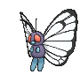
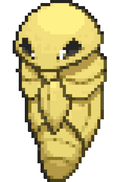
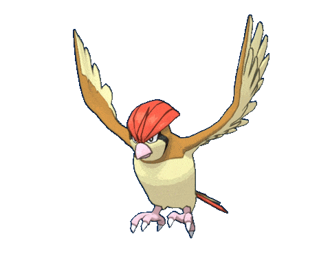
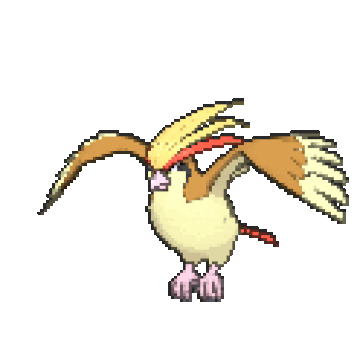
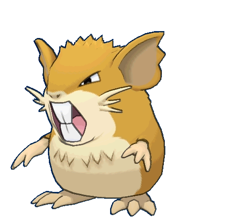

-
Bulbasaur #001

- Grama
- Veneno
Bulbasaur é um Pokémon bonito nascido com uma grande semente solidamente fixado à sua volta, a semente cresce em tamanho como o Pokémon tem. Junto com Squirtle e Charmander, Bulbasaur é um dos três Pokémon disponíveis no início de Pokémon Red e Blue. Ele evolui para Ivysaur.
-
Ivysaur #002

- Grama
- Veneno
Ivysaur é um pokémon inicial do tipo Grama e Venenoso introduzido na Geração I. Ivysaur é um Pokémon que evolui de Bulbasaur no nível 16. Ivysaur tem melhores estatísticas do que Bulbasaur, mas aprenderá ataques em um tempo maior. Por sua vez, evoluirá para Venusaur no nível 32.
-
Venusaur #003

- Grama
- Veneno
Venasaur é um Pokémon quadrúpede com pele verde acidentada, e azulada. Ele tem olhos pequenos e circulares vermelhos, dois dentes pontiagudos em sua mandíbula superior, e quatro dentes pontiagudos em sua mandíbula inferior. Tem três dedos com garras em cada pé. Possui um grande coqueiro em suas costas.
-
Charmander #004

- Fogo
Charmander é um Pokémon do Tipo Fogo e um dos Pokémon capturáveis do jogo Pokémon Go. Ele evolui para Charmeleon no nível 16 e para Charizard no nível 36.
-
Charmeleon #005

- Fogo
Charmeleon é um Pokérmon reptiliano. Ele tem escamas vermelhas na sua parte inferior. Existe um chifre na parte de trás da cabeça. Ele tem olhos verdes e um focinho comprido.
-
Charizard #006

- Fogo
Charizard é um Pokémon dracônico e bípede . É principalmente laranja com uma parte inferior creme do peito até a ponta da cauda. Tem um pescoço longo, pequenos olhos azuis, narinas ligeiramente levantadas e duas estruturas semelhantes a chifres saindo da parte de trás de sua cabeça retangular.
-
Squirtle #007

- Água
O casco de Squirtle não é apenas usado para a proteção. A forma arredondada do casco e as ranhuras em sua superfície ajudam a minimizar a resistência na água, permitindo que este Pokémon nade em altas velocidades.
-
Wartortle #008

- Água
Sua cauda é grande e coberta com uma pele rica, espessura. A cauda torna-se cada vez mais profunda em cor com a idade de Wartortle. Os arranhões na seu casco são provas de resistência deste Pokémon como um combatente.
-
Blastoise #009

- Água
Blastoise é um Pokémon do Tipo Água e um dos Pokémon capturáveis no jogo Pokémon Go. Ele é a forma final de Squirtle e evolui de Wartortle no nível 36.
-
Caterpie #0010

- Inseto
Caterpie é baseado em uma minhoca. Sua pele é verde, tem olhos amarelos com púpilas pretas, tem uma antena vermelha (rosa no anime) e tem uma "boca" verde (amarela no anime, tem quatro pequenas patas amarelas e em seu corpo, existem vários círculos amarelos e na ponta de sua calda tem uma espécie de chocalho.
-
Metapod #0011
- Inseto
Metapod é um Pokémon do Tipo Inseto e um dos Pokémon capturáveis no jogo Pokémon Go. Ele evolui de Caterpie no nível 7 e evolui para Butterfree no nível 10.
-
Butterfree #0012
- Inseto
Butterfree tem uma capacidade superior para procurar um delicioso mel de flores. Ele pode até mesmo buscar, extrair, transportar e mel de flores que estão florescendo mais de seis milhas do seu ninho.
-
Weedle #0013

- Inseto
Cuidado com o ferrão afiado em sua cabeça. Ele se esconde na grama e nos arbustos onde come folhas.
-
Kakuna #0014
- Inseto
Capaz de se mover apenas ligeiramente. Quando em perigo, pode mostrar seu ferrão e envenenar seu inimigo.
-
Beedrill #0015

- Inseto
Tem três ferrões venenosos nas patas dianteiras e na cauda. Eles são usados para espetar seu inimigo repetidamente.
-
Pidgey #0016
- Vôo
Pidgey tem um sentido extremamente afiado de direção. Ele é capaz de infalivelmente voltar para seu ninho, por mais longe que seja removido do seu ambiente familiar.
-
Pidgeotto #0017
- Vôo
Pidgeotto reivindica uma grande área como seu próprio território. Este Pokémon voa ao redor, patrulhando o seu espaço de vida. Se seu território for violado, ele não mostra misericórdia em punir completamente o inimigo com suas garras afiadas.
-
Pidgeot #0018
- Vôo
Pidgeot tem uma plumagem marrom e branca em baixo. Seu bico é rosa, e seu olho fica numa mancha preta. Sua crina é laranja e amarela e sua cauda é vermelha.
-
Rattata #0019

- Normal
Rattata é um dos pokémon do tipo "rato", podendo ser observado tal coisa pelo seu visual. Inicialmente é meio roxeado, tendo olhos vermelhos, uma cauda lisa que termina numa ondulação, e apenas dois dentes grandes superiores.
-
Raticate #0020
- Normal
As presas resistentes de Raticate crescem de forma constante. Para mantê-las para baixo, ele rói rochas e troncos. Pode até mastigar as paredes das casas.